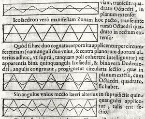
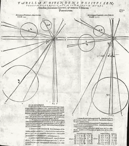

The Cosmographic Mystery¶
Prodromus Dissertationum Cosmographicarum, continens Mysterium Cosmographicum (Tübingen, 1596; Frankfurt, 1621)
Interactive 3D CAD Model — Tabula III (Folio 0034)¶
Parametric 3D CAD reconstruction of Kepler’s 1597 folding copperplate (Tabula III): six cutaway hemispherical planetary shells ($\alpha$ Saturn through $\lambda$ Mercury), five watertight mitered open-frame Platonic scaffolds (Cube $\beta \supset$ Tetrahedron $\delta \supset$ Dodecahedron $\zeta \supset$ Icosahedron $\theta \supset$ Octahedron $\kappa$), central Sun ($\mu$), and carved Renaissance pedestal. Drag to orbit, scrub Explode, toggle Cutaway / Full Orbs / Solids, or switch between Exact 1:1 Caput XIII and Expanded Core proportions.
Table of Contents¶

Preface to the Reader: The Graz Discovery
It is my intention, gentle Reader, to demonstrate in this little book that the Most Good and Great Creator, in founding this mobile world and arranging the order of the heavenly orbs, looked upon those five regular bodies that have earned such celebrated renown from the time of Pythagoras and Plato down to our own day, and that to their nature He accommodated the number of the heavens, their proportions, and the law of their motions.

Chapter I: Why Copernicus’s Hypotheses Agree with the Heavens
Before unfolding the polyhedral secret of the cosmos, Kepler establishes why the heliocentric hypotheses of Nicolaus Copernicus (De revolutionibus, 1543) deserve full physical assent rather than dismissal as a mere calculating fiction. While reverently affirming that nothing in his physical inquiry intends injury to Sacred Scripture, he rejects the scholastic commonplace that false premises might perpetually yield true celestial appearances. An accidental syllogism may stumble upon a single truth, yet when tested across every interconnected phenomenon, falsehood betrays itself unless propped up by endless ad hoc assumptions.

Chapter II: Curved and Straight — Cusanus & the Five Solids
In this one matter above all, Nicholas of Cusa (De Docta Ignorantia, 1440) and others seem truly divine to me: namely, that they esteemed so highly the mutual relationship between the Straight (rectum) and the Curved (curvum), and dared to liken the Curved to God Himself, but the Straight to created beings. For in the outermost spherical surface of the fixed stars—centered upon the Sun and embracing the intermediate ethereal space—shines forth the image of the eternal Trinity; whereas the rectilinear corporeal boundaries of created magnitudes must be drawn within the sphere by inscription and circumscription.
Chapter III: Primary and Secondary Solids & Earth’s Station
Lest the nesting of the five regular solids between Copernicus’s six spheres seem accidental, Kepler proves that the polyhedra themselves obey an intrinsic geometric hierarchy dictating their cosmic order. They divide naturally into two distinct ranks: three primary solids (primaria)—the Cube, Tetrahedron (Pyramis), and Dodecahedron—and two secondary solids (secundaria)—the Octahedron and Icosahedron.
Chapter IV: Why Three Solids Surround Earth and Two Lie Within
Having stationed Earth between the primary and secondary orders, Kepler next asks why the three primary solids surround Earth’s orb on the outside while the two secondary solids are enclosed within it—rather than the reverse arrangement. Asking the reader’s indulgence for a brief theological reflection, he notes that humanity is the contemplative crown of creation, and therefore Earth—dwelling place of the Creator’s image—was fitted to circle midway among the celestial bodies so as to have an equal triad of bodies outside and inside its circuit.
Chapter V: The Cube Between Saturn and Jupiter
Turning to the three primary solids individually, Kepler demonstrates why the Cube (Hexahedron, $\{4, 3\}$) holds first rank in its order and therefore occupies the outermost planetary interval—nearest to the sphere of the fixed stars—between Saturn and Jupiter.
Chapter VI: The Tetrahedron Between Jupiter and Mars
Kepler next shows why the Tetrahedron (Pyramis, $\{3, 3\}$) immediately follows the Cube, occupying the vast second interval between Jupiter and Mars—thereby leaving the remaining primary solid, the Dodecahedron, necessarily in third place between Mars and Earth.
Chapter VII: Order and Polar Duality of the Secondary Solids
Turning to the two secondary solids—the Octahedron ($\{3, 4\}$) and the Icosahedron ($\{3, 5\}$)—Kepler resolves an apparent paradox: although the Octahedron is logically prior in nature to the Icosahedron, why does the Icosahedron stand higher in the heavens (between Earth and Venus) while the Octahedron stands lower (between Venus and Mercury)?
Chapter VIII: Why the Octahedron Lies Between Venus and Mercury
In this concise single-page chapter, Kepler resolves the ordering question raised in Chapter VII: why must the Icosahedron lie directly inside Earth’s orb (between Earth and Venus) and the Octahedron occupy the innermost station between Venus and Mercury?
Chapter IX: Planetary Qualities Derived from the Five Solids
Having established the spatial sequence of the five regular solids, Kepler briefly explores whether traditional planetary qualities and mutual affinities in physical astrology reflect the geometric natures of their assigned bodies. Assigning to each exterior planet the solid inscribed within its sphere and to each interior planet the solid circumscribing it—leaving Earth solely as boundary (limes) and setting Sun and Moon apart as luminaries—yields a clean one-to-one correspondence between the five regular bodies and the five wandering stars:
Chapter X: Origin of the Noble Sexagesimal Numbers
Turning from qualitative planetary traits to astronomical arithmetic, Kepler asks why astronomers from antiquity chose the sacred sexagesimal numbers 6, 12, and 60 (along with 30 and 180) to divide the zodiacal circle and degrees of arc. Counting the combinatorial invariants across all five regular solids, he reveals that—apart from 10 and 15 (sixth and quarter of 60) and the 24 plane angles of the Cube and Octahedron (itself $2 \times 12 = 3 \times 8 = 4 \times 6$)—every single structural count of the five Platonic solids is a divisor of 60:

Chapter XI: Orientation of the Solids & Origin of the Zodiac
Anticipating objections from Aristotelian physicists who protest deducing physical planetary zones from immaterial mathematical figures, Kepler answers briskly that the Creator is Mind (mens), unconstrained in adapting forces and celestial circles to intelligible geometric archetypes. He then investigates how the five nested solids are oriented relative to one another so as to define a common axis (the ecliptic poles) and a common equatorial belt—the Zodiac.

Chapter XII: The Two Treasures of Geometry
Geometry possesses two great treasures: the one is the ratio of the hypotenuse to the legs in a right-angled triangle ([I.47]), and the other is the straight line cut in extreme and mean ratio—the Divine Section ([II.11], [VI.30]). The first you may rightly compare to a measure of gold (massa auri); the second we may call a precious jewel (gemma).

Chapter XIII: Computing Inscribed and Circumscribed Spheres
Hitherto nothing has been said except congruent signs and plausible indications of our proposed theorem. Let us now pass to the astronomical distances of the orbs and geometrical demonstrations: unless these agree, we shall undoubtedly have wasted all our preceding labor. First of all, let us see in what proportion the orbs inscribed in each of these five regular bodies stand to those circumscribed about them.

Chapter XIV: Earth as Measuring Orb
The five solids divide naturally into two noble ranks: three primary solids (primaria)—the Cube, Tetrahedron, and Dodecahedron, each having distinct polygonal faces (square, triangle, pentagon) and simple three-edge trihedral vertices—and two secondary solids (secundaria)—the Icosahedron and Octahedron, borrowing the triangular face and meeting four or five to a vertex around an axis. Fittingly, the dwelling place of contemplative humanity—the orb of Earth (cTERin)—was placed as a boundary wall between these two classes as the measuring circle of all:

Chapter XV: Reconciling Distances & Variations in Prosthaphaeresis
Having compared the pure polyhedral sphere ratios against Copernicus's planetary distances in Chapter XIV, Kepler now asks a decisive quantitative question: if we rebuild the planetary system using the exact five-solid intervals—scaling each planet’s eccentricity proportionally—how much do the observable prosthaphaeresis angles (the heliocentric parallaxes / maximum solar elongations actually measured from Earth) deviate from Copernicus’s numbers?
Chapter XVI: The Moon’s Orb & Celestial Matter
Because adding the tiny Lunar sphere (scarcely 3 parts in 60 of Earth’s eccentricity) dramatically improved the agreement of Mars, Jupiter, and Mercury in Chapter XV’s table, Kepler devotes Chapter XVI to two frank questions: Does the Moon’s orb belong inside the thickness of Earth’s shell? And what is the physical nature—or immateriality—of the five regular solids and planetary orbs?

Chapter XVII: Mercury’s Inscribed Square in the Octahedron
Kepler confronts a glaring technical exception in his own tables of Chapters XIII and XIV: although he promised to inscribe each planet within the insphere of its surrounding polyhedron, for Mercury inside the Octahedron he replaced the true insphere radius ($1000 / \sqrt{3} \approx 577$) with the much larger radius of the circle inscribed in the Octahedron’s equatorial square ($1000 / \sqrt{2} \approx 707$).
Chapter XVIII: Observational Errors in Copernicus & Astronomy’s Precision
Facing the small angular discrepancies tabulated at the end of Chapter XV—$-41'$ for Saturn, $-6'$ for Jupiter, $+20'$ (or $+30'$) for Mars, $-2^\circ 18'$ for Venus, and $-61'$ for Mercury—Kepler launches a searching methodological critique of the limits of observational precision in ancient and Renaissance astronomy. Should the five-solid hypothesis be rejected because it fails to agree ad unguem (to the exact fingernail) with Copernicus's printed parameters?
Chapter XIX: Planet-by-Planet Residual Discrepancies
Moving from general observational limits to each planet individually, Kepler examines the residual discrepancies of Saturn, Jupiter, Mars, Venus, and Mercury one by one, incorporating a detailed critical evaluation supplied by his mentor Michael Mästlin:
Chapter XX: Proportion of Orbital Periods to Solar Distances
Having completed the static polyhedral argument, Kepler opens an epoch-making new line of inquiry—invoking Urania (fave facilis Uranie) as he inaugurates celestial dynamics: What mathematical proportion connects the orbital periods of the planets to the radii of their spheres?
Chapter XXI: Reconciling the Motive Soul with the Five Solids
Anticipating a sharp objection from critics—“Kepler, if your five solids truly established the ratios of the heavens, your new motive-period formula would confirm them rather than clash with them; truth never contradicts truth, so you have stabbed yourself with your own sword!”—Kepler turns the critique around with characteristic candor and analytical clarity.

Chapter XXII: Why Planets Move Uniformly About the Equant Center
Returning to a subtle technical objection raised by Michael Mästlin concerning Chapter XIV, Kepler explains the physical origin of Ptolemy’s equant (and Copernicus’s equivalent small epicyclet): why does a planet move slower at aphelion and faster at perihelion, sweeping nearly uniform angles around an empty equant point $D$ placed twice as far from the Sun as the orbit’s geometric center $B$?
Chapter XXIII: Astronomical Beginning & End of the World
“After the banquet, let us come to the dessert (bellaria).” Closing the Mysterium Cosmographicum with two grand cosmological problems, Kepler examines the astronomical beginning of planetary motion (the configuration of the heavens at Creation) and its astronomical end—the ancient doctrine of the Platonic Great Year (Annus Platonicus), when all planets supposedly return simultaneously to their initial conjunction.